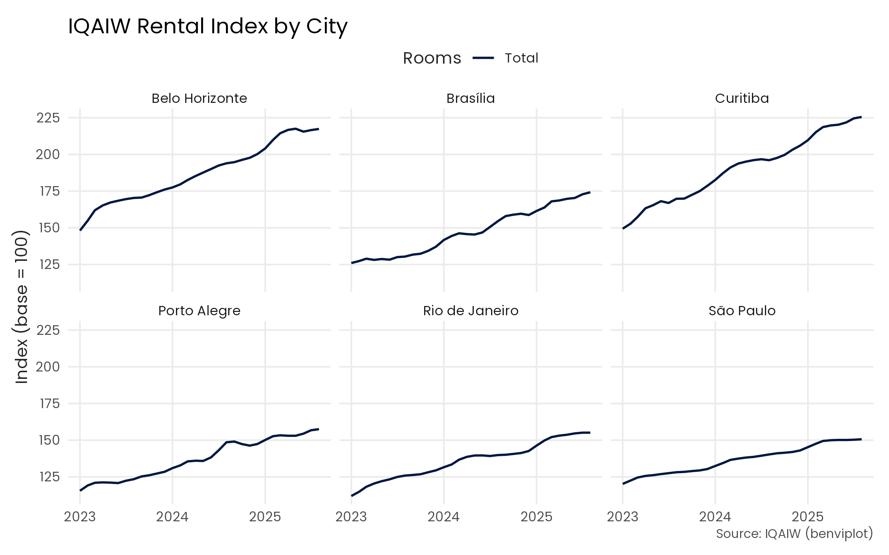
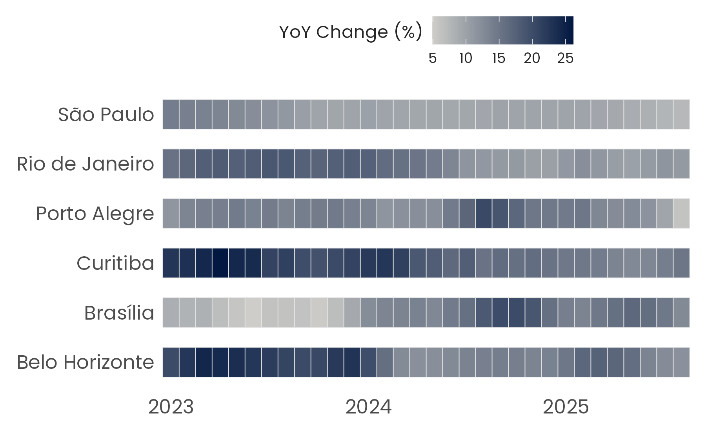
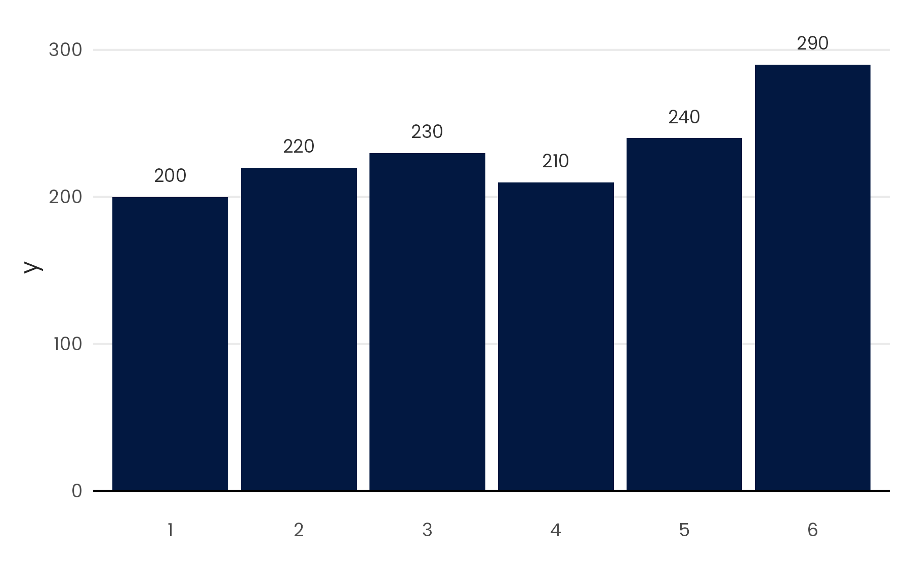

Overview
benviplot provides color palettes and ggplot2 helpers for creating high quality graphics. The package includes:
- Color Palettes: curated color schemes (Set, Qualitative, Sequential palettes).
- ggplot2 Scales: discrete and continuous scales for seamless ggplot2 integration.
- Plot Helpers: wrapper functions for common visualizations.
- Custom Theme: clean, professional theme with Poppins font support.
Installation
You can install benviplot from GitHub.
# Install remotes if needed
# install.packages("remotes")
# Install benviplot from GitHub
remotes::install_github("viniciusoike/benviplot")Plotting
To use the colors in plots use one of the scale_*_benvi_* functions.
scale_color_benvi_dscale_color_benvi_cscale_fill_benvi_cscale_fill_benvi_d
The pacakge also supplies a generic theme_benvi() function that works best if Poppins is available.
# Rental price index for major cities
index_data <- iqaiw |>
filter(
rooms %in% c("1", "2"),
between(date, as.Date("2023-01-01"), as.Date("2025-12-31"))
)
ggplot(index_data, aes(date, index, color = rooms)) +
geom_line(lwd = 0.7) +
facet_wrap(vars(name_muni)) +
scale_color_benvi_d() +
labs(
title = "IQAIW Rental Index by City",
x = NULL,
y = "Index (base = 100)",
color = "Rooms",
caption = "Source: IQAIW (benviplot)"
) +
theme_benvi()
When using a continuous scale the colors are interpolated.
# Price per m2 by city over time
index_data <- iqaiw |>
filter(
rooms == "Total",
between(date, as.Date("2023-01-01"), as.Date("2025-12-31"))
) |>
mutate(xdate = lubridate::year(date) + (lubridate::month(date) - 1) / 12)
ggplot(index_data, aes(x = xdate, y = name_muni, fill = acum12m * 100)) +
geom_tile(height = 0.6, color = "gray90") +
scale_fill_benvi_c(
pal_name = "benvi_blue",
name = "YoY Change (%)",
direction = -1
) +
scale_x_continuous(
breaks = seq(2023, 2025, 1),
expand = expansion(0)
) +
labs(x = NULL, y = NULL) +
theme_benvi() +
theme(
legend.title = element_text(hjust = 0.5, vjust = 0.75),
axis.text = element_text(size = 12),
panel.grid = element_blank()
)
The package features some generic plot_ functions that help to create standard plots. These functions aim to be efficient, allowing for quick data exploration, while remaining polished enough to be used for reports.
These functions usually include simple helper arguments like text in the case of plot_column that plots its value above the column.
sales <- data.frame(
x = factor(c(1, 2, 3, 4, 5, 6)),
y = c(200, 220, 230, 210, 240, 290)
)
plot_column(sales, x = x, y = y, text = TRUE)
License
MIT License. See LICENSE.md for details.